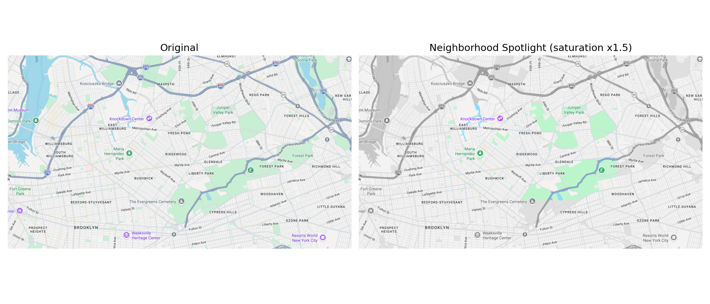

Submit the following assignments via the honors section of Gradescope.
Throughout the semester, we will analyze data from the Opportunity Atlas, a landmark research project by economists Raj Chetty, Nathaniel Hendren, John Friedman, Maggie Jones, and Sonya Porter. The Atlas tracks the long-term outcomes (income in adulthood, incarceration rates, college attendance) of children who grew up in every Census tract in the United States, broken down by parental income, race, and gender. It allows us to ask a simple but profound question: does the neighborhood where you grow up shape where you end up in life?
You will work in teams. Each team will be assigned one of the five NYC boroughs to analyze, and each team member will focus on a neighborhood within that borough. Throughout the semester, your team will build up a borough-level analysis while each of you contributes a neighborhood-level case study. These will come together in a showcase presentation at the end of the semester.
The dataset for this project is fixed: you will use the Opportunity Atlas tract-level outcomes file (tract_outcomes_simple.csv), merged with the 2010 Census tract centroid file for New York (CenPop2010_Mean_TR36.txt), which provides the latitude and longitude of each Census tract. Download both files now and keep them for the rest of the semester.
With your team, decide which neighborhood each member will focus on. Each neighborhood should be different, and together your neighborhoods should be reasonably representative of the borough. Pick a neighborhood you know or are curious about. You will identify the Census tract(s) that correspond to your neighborhood in HC 2.
Work with your assigned team to fill out the
Team Contract Google Form,
which will guide you through agreeing on roles, communication, and expectations for the semester.
Group submission: one submission per team.
Read the
non-technical summary
of the Opportunity Atlas paper and write a short paragraph (3–5 sentences) in your own words
explaining what the Atlas measures and why it matters. Submit your paragraph as a .pdf to the assignment
HC1 - Dataset Summary in the honors section of Gradescope.
Individual submission: one submission per student.
Each student will create a one-page PDF profile of their chosen neighborhood. Your summary must include at least the following:
Your summary should exceed these minimum requirements to receive full credit. Include any context you think will be relevant to the future analysis, for example, historical background, notable institutions, or economic characteristics. A great resource is Social Explorer: from the top menu, select Resources → Demographic Profiles and enter your zip code(s). Census Reporter is another useful tool: search for your neighborhood name to find demographic data organized by Census tract.
Individual submission: Submit a .pdf file containing your summary to the assignment HC2 - Portrait of a Neighborhood in the honors section of Gradescope.
This assignment asks you to build a shared understanding of the Opportunity Atlas and the concept of intergenerational economic mobility. Working as a group, research and answer the following questions:
You may collaborate using a Google Doc, Miro, or Padlet (both have free plans).
Group submission: Submit a single .pdf written in essay form (not a disconnected list of answers), with your sources cited, to the assignment HC3 - What is Economic Mobility? in the honors section of Gradescope. One submission per team.
Building on HC 3, your team will now focus its research on your assigned borough. Browse news articles, policy reports, and public data to characterize what is known about economic opportunity, inequality, and neighborhood outcomes in your borough. Your report should address questions such as:
Grading criteria:
Group submission: Submit a single .pdf report written in essay form, with citations, to the assignment HC4 - Opportunity in My Borough in the honors section of Gradescope. One submission per team.

For this assignment, you will create a spotlight visualization of your neighborhood: a satellite map image in which everything outside a central rectangular region is converted to grayscale, while the colors in the spotlight area are amplified. You will write two functions that each transform an image region, apply them to the appropriate areas, and save a single output image.
Start by downloading a .png map image of your neighborhood from Google Maps, zoomed to a level where your neighborhood fills the frame. Load it using plt.imread(), which returns a NumPy array of shape height × width × 3 with float values in [0, 1] for PNG files. Make a writable copy to modify, and define your spotlight boundaries as fractions of the image dimensions (for example, the top and bottom of the spotlight at one-quarter and three-quarters of the image height, and similarly for the left and right edges).
Function 1 — to_grayscale(region): Write a function that takes a rectangular image region (a NumPy array slice of shape rows × cols × 3) and returns a copy of it converted to grayscale. To convert a color pixel to grayscale, compute its luminance using the weighted formula L = 0.299*R + 0.587*G + 0.114*B, then set all three channels to L. Apply this function to each of the four border regions (upper, lower, left, and right).
Function 2 — boost_saturation(region, factor): Now think about what your first function actually did. The luminance L is the gray equivalent of a pixel. Setting all three channels to L zeroes out how much each channel deviates from gray, and that deviation is what carries color. Before writing any code, work through the following:
Write boost_saturation(region, factor), which returns a copy of the region with each channel set to L + factor * (channel - L), clipped to [0, 1] using numpy.clip(array, 0, 1). Clipping caps every value in the array to the valid range: anything below 0 is set to 0, anything above 1 is set to 1. You need this here because multiplying the color deviation by a factor greater than 1 can push channel values outside the range that a float image allows. Apply the function to the spotlight area. Try factor values of 0, 0.5, 1, 1.5, and 2 and describe what you observe in each case. Which gives the strongest contrast between the spotlight and the gray border?
Once you have applied both functions, save the result as a single .png file using plt.imsave().
Hint: To apply a function to a region, pass the corresponding array slice directly. For example:
result[:border_top, :] = to_grayscale(img[:border_top, :])
Individual submission: Submit a .pdf file containing your Python code and both the original and processed images side by side to the assignment HC5 - Neighborhood Spotlight in the honors section of Gradescope.
In this guided in-lab session, you will load, merge, and begin exploring the two datasets at the core of your project. Work through the provided Jupyter notebook, which will walk you through the following steps:
By the end of the session, your team should have a clean, NYC-filtered DataFrame and a shared plan for what you want to investigate in HC 7.
Group submission: Submit a .pdf outlining your team's plan for HC 7 to the assignment HC6 - Borough Analysis Plan in the honors section of Gradescope. One submission per team.
Using the merged dataset from HC 6, your team will produce a full data analysis of your borough. The analysis has two components:
Your analysis must go beyond describe() output. Observations should be supported by statistics and at least 6 visualizations across at least 3 different plot types. Every plot must be accompanied by a written paragraph explaining what you observe — not just what the code does, but what the finding means.
Grading criteria:
Group submission: Submit a .pdf to the assignment HC7 - Borough Data Analysis in the honors section of Gradescope. One submission per team.
One of the Opportunity Atlas's most striking findings is that neighboring Census tracts can have dramatically different outcomes — children who grew up just one block apart may end up with very different adult incomes. In this assignment, you will look for evidence of this pattern in your borough using a Python function you write yourself.
To do this:
Write a short paragraph interpreting your finding. Does the contrast surprise you? Can you offer any explanation for why these neighboring tracts have such different outcomes?
Note: Your program may take several minutes to run for larger boroughs (Brooklyn and Queens have over 600 tracts each). This is normal — do not interrupt it.
Extra credit: Speed up your program by adding a bounding box pre-filter. Before computing the full Haversine distance between two tracts, first check whether they are close enough in latitude and longitude to possibly be within 1 km of each other. In NYC (latitude ~40.7°N), 1 km corresponds to roughly 0.009 degrees of latitude and 0.012 degrees of longitude. If two tracts differ by more than these thresholds in either dimension, skip the Haversine calculation entirely. How much faster does your program run with this optimization?
Individual submission: Submit a .pdf containing your Python code and written discussion to the assignment HC8 - One Block Can Make a Difference in the honors section of Gradescope.
Using the latitude and longitude coordinates from the merged dataset, you will create an interactive Plotly scatter map of your borough in which each Census tract appears as a marker colored by its mobility outcome (kfr_pooled_pooled_p25).
To do this:
Write a short paragraph interpreting the geographic pattern. Does opportunity cluster in particular parts of your borough? Does the map match what you found in your HC 4 research?
Individual submission: Submit a .pdf containing your Python code, a screenshot of the map, and your written interpretation to the assignment HC9 - Mapping Opportunity with Plotly in the honors section of Gradescope.
The Opportunity Atlas tells us the average adult income rank for children who grew up in each tract — but individual outcomes vary around this average. In this assignment, you will write a simulation that models this variability and uses random numbers to explore what outcomes look like for a large number of hypothetical children from different neighborhoods.
To do this:
Write a short paragraph reflecting on what the simulation reveals. What does overlap between the distributions mean? What would it mean if the distributions did not overlap at all?
Individual submission: Submit a .pdf containing your Python code, histogram, and written reflection to the assignment HC10 - Mobility Simulation in the honors section of Gradescope.
In this two-part assignment, you will build an individual page for your neighborhood and then collaborate with your team to create a shared borough project site.
Create a GitHub Pages site for your neighborhood. It should include:
Working with your team, create a shared GitHub Pages site for your borough project. The team site should include:
One team member should host the repository; the others can contribute via pull requests or by being added as collaborators.
To embed an HTML file as an iframe, use the following tag (assuming your map file is called mymap.html and lives in the same directory as your page):
<iframe src="mymap.html" width="600" height="400" frameborder="0" marginwidth="0" marginheight="0" allowfullscreen></iframe>If you are using Markdown, wrap the iframe tag in <dl> tags:
<dl> <iframe src="mymap.html" width="600" height="400" frameborder="0" marginwidth="0" marginheight="0" allowfullscreen></iframe> </dl>
Useful links:
Submissions:
In this in-class session, teams share their work with each other in a walk-around format. Each team sets up at a station with their project website open and their two slides ready. As other teams visit your station, give them your 3–5 minute presentation covering: who is on the team, which neighborhoods were studied, a key finding from the data, and a link to the project website.
As you visit other teams, pay attention to both their presentation and their project website. Take notes on what works well and what could be improved, considering the clarity of the analysis, the quality of the visualizations, and how well the website communicates the findings to a general audience. Be ready to share your observations as constructive verbal feedback on the spot.
Finally, each student will complete the peer evaluation Google Form assessing each member of their own team's contributions over the semester, as outlined in the Team Contract.
Submissions:
Each team will deliver a 5-minute final presentation (2 slides from HC12) summarizing their semester-long investigation into economic opportunity in their borough. Presentations should incorporate feedback received in HC 12.
After the presentations, the class will break into small groups for a poster-session style showcase: each team uses their project website to walk visitors through their work, fielding questions about their methodology, findings, and what surprised them most. Visitors may include invited guests from outside the class.
Grading reflects both the prepared presentation and the quality of the interactive discussion.